home>여행코스>연인 코스
연인 코스
DAY 1:홍콩 맛보기
-
13:00피크 트램 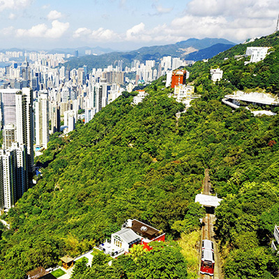 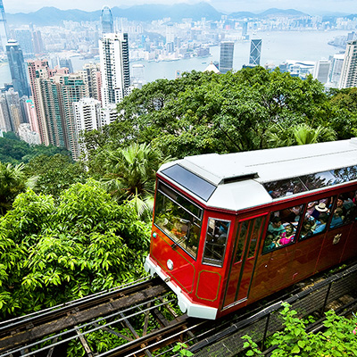
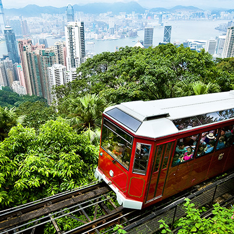
-
16:00소호 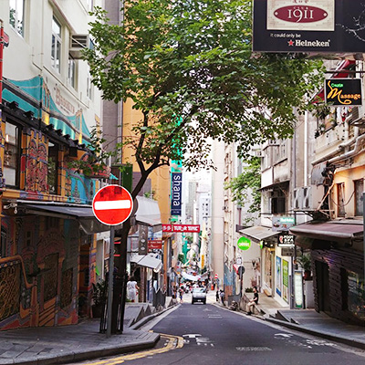 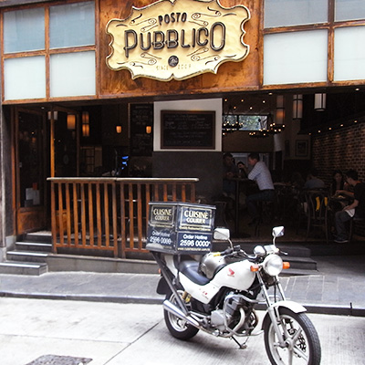
-
16:30미드레벨 에스컬레이터  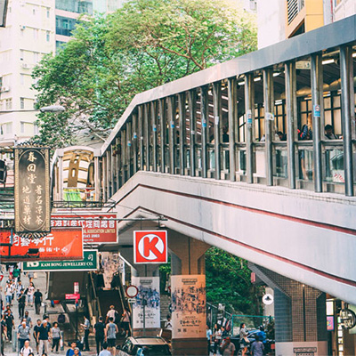
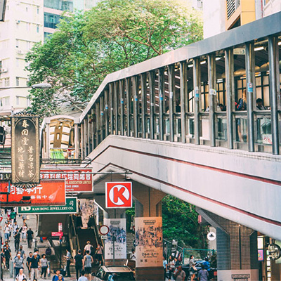

-
19:00빅버스 나이트 투어 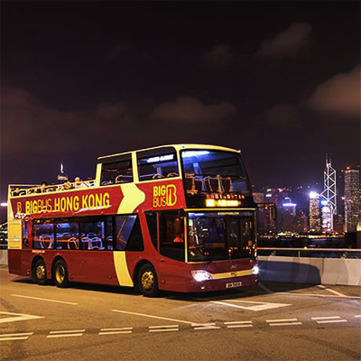
피크 트램을 타고 빅토리아 피크에 올라 홍콩 시내를 모두 훑어본다. 무더운 홍콩에서 유일하게 쌀쌀한 곳이니, 불쾌지수 걱정 없이 연인과 몸을 맞대고 온기를 나눈다. 그리고는 낭만가득한 센트럴의 소호로 향한다. 곳곳에 숨은 아트갤러리를 감상하고, 미드레벨 에스컬레이터를 타고 마음에 드는 카페에 앉아 잠시 쉬어가도록 하자. 구룡으로 넘어와 마무리로 나이트 빅버스를 타고 시내를 구경하면, 하루 일정 끝!
DAY 2:영화 같은 날
-
10:30시계탑 -
14:001881 해리티지의 훌렛 하우스 -
18:00너츠포드 테라스 


-
20:00아쿠아 루나 심포니 오브 라이트 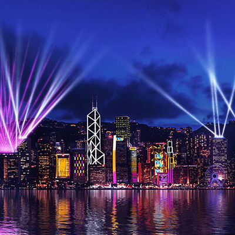

-
21:00아쿠아 바 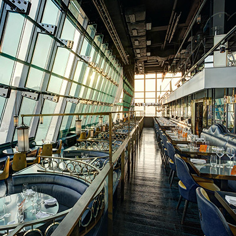
전통적으로 시계탑 앞은 수많은 연인의 약속장소였다. 시계탑에서 출발해 해변 길을 산책한다. 영화 속 주인공들이 거닐던 캔톤 로드를 걸어보기도 하고, 한낮의 뜨거운 열기도 식힐 겸 쇼핑몰에 들어가 슬쩍 쇼핑도 해본다. 쇼핑몰에서 점심을 해결한 뒤 1881 헤리티지의 홀렛 하우스에서 애프터눈 티로 몸과 마음을 차분하게 가라앉혀도 보자. 다음에는 너츠포드 테라스에서 저녁과 약간의 알코올을 섭취한 뒤, 심포니 오브 라이트를 감상하러 간다. 빛의 축제가 끝난 뒤 홍콩의 야경이 잘 보이는 아쿠아 바에서 칵테일 한 잔 하며 하루를 끝마친다.
DAY 3:여유로운 날
-
10:00엘리먼츠 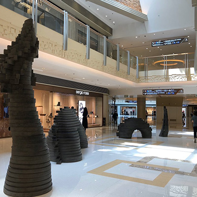 -
12:00리츠칼튼 애프터눈 티 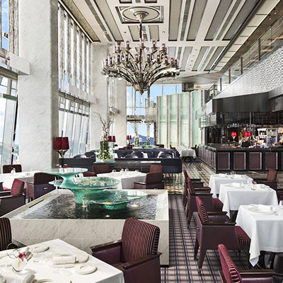
공항고속철도(AEL)역과 연결된 엘리먼츠에서 간단한 쇼핑을 한다. 그리고는 엘리먼트와 연결된 리츠칼튼 호텔에 앉아 애프너눈 티로 마무리해보자